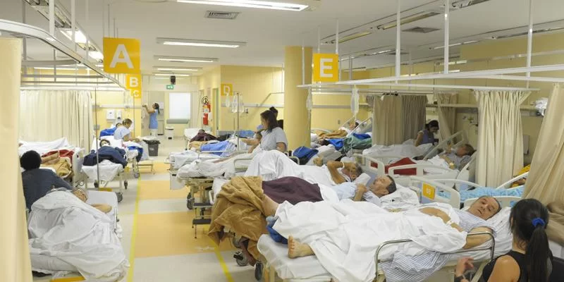
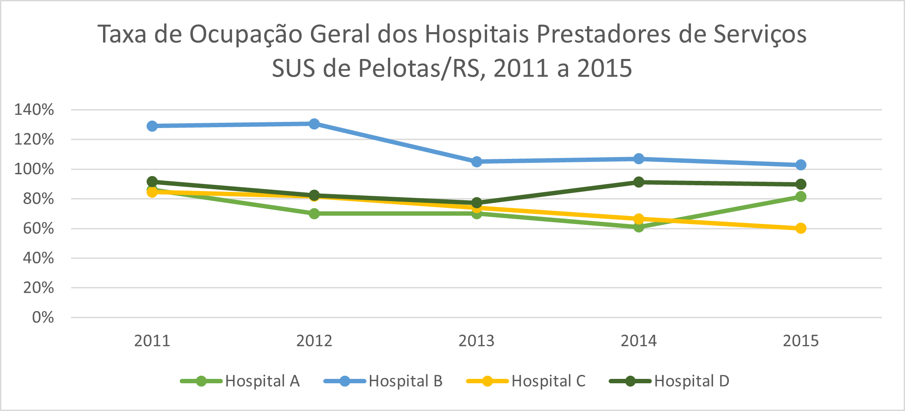

PROBLEMA & SOLUÇÃO
Problema
A superlotação de pacientes, aliada à escassez de informações e equipamentos, representa um desafio crítico nos hospitais, prejudicando a qualidade do atendimento, eficiência operacional e bem-estar dos pacientes.
Gravidade do problema
Assim como mostrado no gráfico acima, há uma má distribuição entre hospitais de uma mesma rede, no qual pacientes poderiam ser realocados para outras unidades, facilitando o processo, e melhorando a eficiência do atendimento. A ausência de um sistema eficiente de monitoramento e alertas contribui para a desorganização. Diante desse cenário, surge a necessidade premente de um solução que otimize a distribuição de pacientes, aprimorando significativamente a eficiência do atendimento e a experiência geral dos pacientes.
Solução
Para solucionar esse desafio, desenvolvemos um sistema abrangente que integra hardware e software. O hardware utiliza sensores distribuídos pelo hospital e pulseiras com chips Bluetooth Low Energy (BLE). Em paralelo, o software oferece uma plataforma online para gestores e profissionais da saúde, juntamente com um site acessível ao público. Com essa solução, buscamos alcançar monitoramento em tempo real da ocupação de leitos, distribuição eficiente de pacientes, alertas automáticos para gestores, transparência para o público sobre a lotação hospitalar e um histórico de ocupação para análises e tomadas de decisões mais informadas.